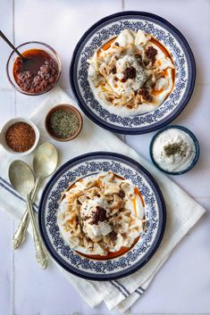

Les Mantis sont des ravioles fabriquées en Turquie mais aussi dans plusieurs pays d'Asie centrale
Manti

Ingrédients:(pour 4 personnes)
Pour la pate:
450 g de farine
2 oeufs
une pincée de sel
environ 1,2 litres d'eau
Pour la farce:
0,5 kg de viande hachés
1 oignon
une pincée de sel
ciboulette, persil, ou autre selon envie
3 yaourts à la grecque
ail selon envie
un peu de coulis de tomate
20 g de beurre
épices selon envie
Réalisation:
Difficulté: difficile
Préparation: 1 h 10 mn
Cuisson: 10 mn
Temps Total: 1 h 20 mn
Préparation:
Dans un premier temps, faire la pâte: verser la farine dans un saladier avec la pincée de sel et les oeufs. Mélanger à la cuillère, puis ajouter l'eau peu à peu, pétrir à la main. La pate doit être élastique entre les doigts. Former une boule et laisser reposer.
Faire la farce: il s'agit juste de bien mélanger la viande hachée, avec la ciboulette (ou le persil ou autre) avec l'oignon préalablement émincé.
Séparer la pâte en trois parts et étaler la première sur une épaisseur d'environ 1 mm. Elle est assez élastique donc demande un abaissage vigoureux. A l'aide de la pointe d'un couteau, découper de petits carrés, ou triangles selon la forme que vous voulez donner à vos mantì. Placer une petite boule de farce au milieu, et refermer en soudant bien les bords des raviolis à l'aide des doigts humidifiés. Placer ensuite sur une assiette farinée et procédez aisi juqu'à épuisement de la farce et de la pâte.
Enfin plonger les raviolis dans de l'eau bouillante pendant environ 10 minutes. Quand ils sont cuits ils remontent à la surface.
Dans un bol, mélanger le yaourt avec l'ail haché. Dans une petite casserole, faire chauffer le coulis de tomate, avec les épices et le beurre. Bien mélanger.
Pour finir:
Présentation: placer les raviolis dans chaque assiette, recouvrir abondament de yaourt. Ils doivent baigner dedans. Avec une cuillère, décorer avec la sauce paprika et servir directement.